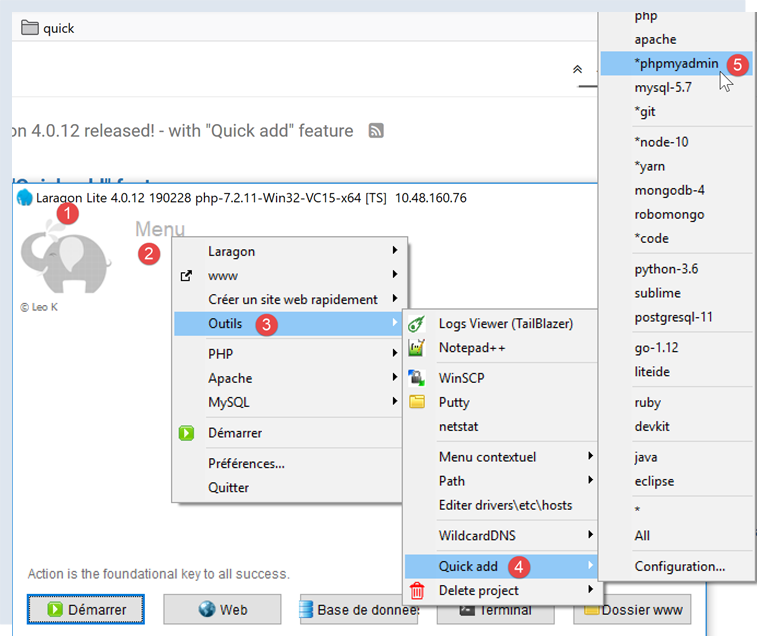
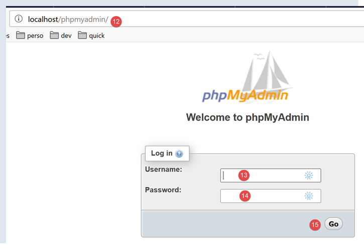
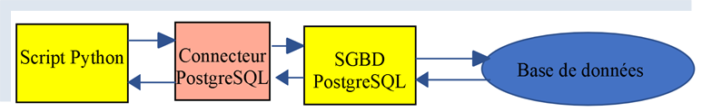
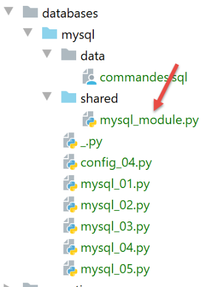
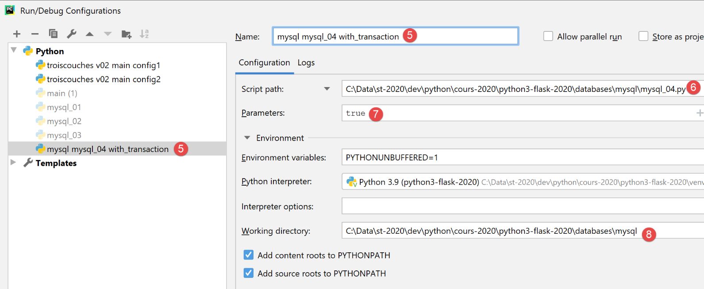

16. Uso de SGBD MySQL

16.1. Instalación de SGBD y MySQL
Para poder utilizar el SGBD y el MySQL, instalaremos el software Laragon.
16.1.1. Instalación de Laragon
Laragon es un paquete que reúne varios programas:
- un servidor web Apache. Lo utilizaremos para escribir scripts web en Python;
- el SGBD MySQL;
- el lenguaje de script PHP, que no utilizaremos;
- un servidor Redis que implementa una caché para aplicaciones web. No lo utilizaremos;
Laragon se puede descargar (febrero de 2020) en la siguiente dirección:


- La instalación de [1-5] genera la siguiente estructura de directorios:

- en [6], la carpeta de instalación de PHP (no utilizada en este documento);
Al ejecutar [Laragon], aparece la siguiente ventana:

- [1]: el menú principal de Laragon;
- [2]: el botón [Start All] inicia el servidor web Apache y el SGBD MySQL;
- [3]: el botón [WEB] muestra la página web [http://localhost];
- [4]: el botón [Database] permite administrar el SGBD y el MySQL con la herramienta [phpMyAdmin]. Primero hay que instalar esta herramienta;
- [5]: el botón [Terminal] abre un terminal de comandos;
- [6]: el botón [Root] abre un Explorador de Windows en la carpeta [<laragon>/www], que es la raíz del sitio web [http://localhost]. Ahí es donde hay que colocar las aplicaciones web estáticas administradas por el servidor Apache de Laragon;
16.1.2. Creación de una base de datos
Ahora mostramos cómo crear una base de datos, así como un usuario MySQL con la herramienta Laragon.

- Una vez iniciado, Laragon [1] se puede administrar desde un menú [2];
- en [3-5], se instala la herramienta [phpMyAdmin] de administración de MySQL si aún no se ha instalado;

- en [6], se inicia el servidor web Apache, así como SGBD y MySQL;
- en [7], se inicia el servidor Apache;
- en [8], se inician SGBD y MySQL;

- en [8-10], se crea una base de datos que se denomina [dbpersonnes] [11]. Vamos a construir una base de datos de personas;

- en [11], vamos a administrar la base de datos que acabamos de crear;

- La operación [Bases de données] envía una solicitud web a URL, [http://localhost/phpmyadmin] y [12]. El servidor web Apache de Laragon es el que responde. El URL [http://localhost/phpmyadmin] es el URL de la utilidad [phpMyAdmin] que instalamos anteriormente, [5]. Esta utilidad permite administrar las bases de datos MySQL;
- por defecto, las credenciales de inicio de sesión del administrador de la base de datos son: root [13] sin contraseña [14];

- en [16], la base de datos que creamos anteriormente;

- por el momento tenemos una base [dbpersonnes] [17] que está vacía [18];
Creamos un usuario [admpersonnes] con la contraseña [nobody], quien tendrá todos los derechos sobre la base de datos [dbpersonnes]:

- en [19], nos ubicamos en la base [dbpersonnes];
- en [20], seleccionamos la pestaña [Privileges];
- en [21-22], vemos que el usuario [root] tiene todos los derechos sobre la base de datos [dbpersonnes];
- en [23], se crea un nuevo usuario;

- en [25-26], el usuario tendrá el identificador [admdbpersonnes];
- en [27-29], su contraseña será [nobody];
- en [30], phpMyAdmin indica que la contraseña es muy débil (fácil de descifrar). En producción, es preferible generar una contraseña segura con [31];
- en [32], se indica que el usuario [admdbpersonnes] debe tener todos los derechos sobre la base de datos [dbpersonnes];
- en [33], se valida la información proporcionada;

- en [35], phpMyAdmin indica que se ha creado el usuario;
- en [36], la orden SQL que se emitió en la base;
- en [37], el usuario [admpersonnes] tiene todos los derechos sobre la base de datos [dbpersonnes];
Ahora tenemos:
- una base de datos MySQL [dbpersonnes];
- un usuario [admpersonnes/nobody] que tiene todos los derechos sobre esta base de datos;
16.2. Instalación del paquete [mysql-connector-python]
Vamos a escribir scripts en Python para aprovechar la base de datos creada anteriormente con la siguiente arquitectura:

Un conector sirve para aislar el código Python del SGBD en uso. Existen conectores para diferentes modelos de SGBD y todos ellos siguen la misma interfaz. Asimismo, cuando en lo anterior se reemplaza el SGBD y el MySQL por el SGBD y el PostgreSQL, la arquitectura queda así:

Dado que todos los conectores de SGBD siguen la misma interfaz, normalmente no es necesario modificar el script de Python. En la práctica, la mayoría de los SGBD tienen un SQL propio:
- cumplen con el estándar SQL (Lenguaje de Consulta Estructurado);
- pero la amplían, ya que no es suficiente, con extensiones propias del lenguaje;
Por lo tanto, es frecuente que, al cambiar de SGBD, haya que realizar modificaciones de SQL en los scripts.
De forma nativa, Python no ofrece la posibilidad de administrar una base de datos MySQL. Para ello, es necesario descargar un paquete. Existen varios. Aquí utilizaremos el paquete [mysql-connector-python], que es el conector oficial de Oracle, la empresa propietaria de MySQL.
La instalación del paquete se realizará en una ventana de PyCharm:

- la carpeta [2] no es relevante para lo que sigue;
En la terminal, escribimos el comando [pip search MySQL]:
- [pip] (Package Installer for Python) es la herramienta de instalación de paquetes de Python. La herramienta [pip] se conecta al repositorio que contiene los paquetes de Python;
- [search MySQL]: solicita la lista de paquetes que contengan el término [MySQL] (no importa si se escribe en mayúsculas o minúsculas) en su nombre;
Los resultados del comando son los siguientes:
mysql (0.0.2) - Virtual package for MySQL-python
jx-mysql (3.49.20042) - jx-mysql - JSON Expressions for MySQL
weibo-mysql (0.1) - insert mysql
bits-mysql (1.0.3) - BITS MySQL
MySQL-python (1.2.5) - Python interface to MySQL
deployfish-mysql (0.2.13) - Deployfish MySQL plugin
mtstat-mysql (0.7.3.3) - MySQL Plugins for mtstat
bottle-mysql (0.3.1) - MySQL integration for Bottle.
WintxDriver-MySQL (2.0.0-1) - MySQL support for Wintx
py-mysql (1.0) - Operating Mysql for Python.
mysql-utilities (1.4.3) - MySQL Utilities 1.4.3 (part of MySQL Workbench Distribution 6.0.0)
…. - Tool to move slices of data from one MySQL store to another
mysql-tracer (2.0.2) - A MySQL client to run queries, write execution reports and export results
mysql-utils (0.0.2) - A simple MySQL library including a set of utility APIs for Python database programming
mysql-connector-repackaged (0.3.1) - MySQL driver written in Python
dffml-source-mysql (0.0.5) - DFFML Source for MySQL Protocol
mysql-connector-python (8.0.19) - MySQL driver written in Python
INSTALLED: 8.0.19 (latest)
prometheus-mysql-exporter (0.2.0) - MySQL query Prometheus exporter
backwork-backup-mysql (0.3.0) - Backwork plug-in for MySQL backups.
django-mysql-manager (0.1.4) - django-mysql-manager is a Django based management interface for MySQL users and databases.
…. - mysql operate
C:\Data\st-2020\dev\python\cours-2020\v-01>
Se han listado todos los módulos cuyo nombre o descripción contienen la palabra clave MySQL. El que utilizaremos (febrero de 2020) es [mysql-connector-python], línea 17. Para instalarlo, escribimos en el terminal el comando [pip install -U mysql-connector-python]:
C:\Data\st-2020\dev\python\cours-2020\v-01>pip install -U mysql-connector-python
Collecting mysql-connector-python
Using cached mysql_connector_python-8.0.19-py2.py3-none-any.whl (355 kB)
Requirement already satisfied, skipping upgrade: protobuf==3.6.1 in c:\myprograms\python38\lib\site-packages (from mysql-connector-python) (3.6.1)
Requirement already satisfied, skipping upgrade: dnspython==1.16.0 in c:\myprograms\python38\lib\site-packages (from mysql-connector-python) (1.16.0)
Requirement already satisfied, skipping upgrade: six>=1.9 in c:\users\serge\appdata\roaming\python\python38\site-packages (from protobuf==3.6.1->mysql-connector-python) (1.14.0)
Requirement already satisfied, skipping upgrade: setuptools in c:\myprograms\python38\lib\site-packages (from protobuf==3.6.1->mysql-connector-python) (41.2.0)
Installing collected packages: mysql-connector-python
Successfully installed mysql-connector-python-8.0.19
- línea 1: la opción [install -U] (U=upgrade) solicita la versión más reciente de los distintos paquetes asociados al paquete [mysql-connector-python];
Para conocer los paquetes instalados en el entorno de Python de nuestra máquina, escribimos el comando [pip list]:
C:\Data\st-2020\dev\python\cours-2020\v-01>pip list
Package Version
---------------------- ----------
asgiref 3.2.3
astroid 2.3.3
atomicwrites 1.3.0
attrs 19.3.0
certifi 2019.11.28
…
MarkupSafe 1.1.1
mccabe 0.6.1
more-itertools 8.1.0
mysql-connector-python 8.0.19
mysqlclient 1.4.6
packaging 20.0
pip 20.0.1
pipenv 2018.11.26
…
- línea 13: efectivamente, tenemos el paquete [mysql-connector-python];
Para saber cómo usar el paquete [mysql-connector-python] para administrar una base de datos MySQL, visitaremos el sitio web del paquete |https://dev.mysql.com/doc/connector-python/en/|. A continuación se presentan una serie de ejemplos.
16.3. Script [mysql_01]: conexión a una base de datos MySQL - 1
El script [mysql_01] presenta el primer paso para utilizar una base de datos. Nos permitirá verificar que podemos conectarnos a la base de datos [dbpersonnes] creada anteriormente.
# importación del módulo mysql.connector
from mysql.connector import connect, DatabaseError, InterfaceError
# conexión a una base de datos MySql [dbpersonnes]
# la identidad del usuario es (admpersonnes, nobody)
USER = "admpersonnes"
PWD = "nobody"
HOST = "localhost"
DATABASE = "dbpersonnes"
# Allá vamos
connexion = None
try:
print("Connexion au SGBD MySQL en cours...")
# inicio de sesión
connexion = connect(host=HOST, user=USER, password=PWD, database=DATABASE)
# seguimiento
print(
f"Connexion MySQL réussie à la base database={DATABASE}, host={HOST} sous l'identité user={USER}, passwd={PWD}")
except (InterfaceError, DatabaseError) as erreur:
# se muestra el error
print(f"L'erreur suivante s'est produite : {erreur}")
finally:
# se cierra la conexión si se ha abierto
if connexion:
connexion.close()
Notas
- línea 2: importamos ciertas funciones y clases del módulo [mysql.connector];
- líneas 6-7: las credenciales del usuario que se conectará;
- línea 8: la máquina que aloja la base de datos. De hecho, el conector MySQL permite trabajar con una base de datos remota;
- línea 9: el nombre de la base de datos a la que queremos conectarnos;
- líneas 11-26: el script conectará (línea 16) al usuario [admpersonnes / nobody] a la base de datos [dbpersonnes];
- líneas 20-26: la conexión podría fallar. Por eso se realiza dentro de un try / except / finally;
- línea 16: el método connect del módulo [mysq.connector] admite diferentes parámetros con nombre:
- user: usuario propietario de la conexión [admpersonnes];
- password: contraseña del usuario [nobody];
- host: máquina de SGBD, MySQL y [localhost];
- database: la base de datos a la que se conecta. Opcional.
- línea 20: si se lanza una excepción, es del tipo [DatabaseError] o [InterfaceError];
- líneas 23-26: en la cláusula [finally], se cierra la conexión;
Resultados
16.4. script [mysql_02]: conexión a una base de datos MySQL - 2
En este nuevo script, la conexión a la base de datos se aísla en una función:
# importación del módulo mysql.connector
from mysql.connector import DatabaseError, InterfaceError, connect
# ---------------------------------------------------------------------------------
def connexion(host: str, database: str, login: str, pwd: str):
# se conecta y luego se desconecta (nombre de usuario, contraseña) de la base de datos [database] del servidor [host]
# lanza la excepción DatabaseError si hay algún problema
connexion = None
try:
# conexión
connexion = connect(host=host, user=login, password=pwd, database=database)
print(
f"Connexion réussie à la base database={database}, host={host} sous l'identité user={login}, passwd={pwd}")
finally:
# se cierra la conexión si se ha abierto
if connexion:
connexion.close()
print("Déconnexion réussie\n")
# ---------------------------------------------- main
# datos de inicio de sesión
USER = "admpersonnes"
PASSWD = "nobody"
HOST = "localhost"
DATABASE = "dbpersonnes"
# inicio de sesión de un usuario existente
try:
connexion(host=HOST, login=USER, pwd=PASSWD, database=DATABASE)
except (InterfaceError, DatabaseError) as erreur:
# se muestra el error
print(erreur)
# inicio de sesión de un usuario inexistente
try:
connexion(host=HOST, login="xx", pwd="xx", database=DATABASE)
except (InterfaceError, DatabaseError) as erreur:
# se muestra el error
print(erreur)
Notas:
- líneas 6-19: una función [connexion] que intenta conectar y luego desconectar a un usuario de la base de datos [dbpersonnes]. Muestra el resultado;
- líneas 29-41: programa principal — llama dos veces al método connexion y muestra las posibles excepciones;
Resultados
16.5. script [mysql_03]: creación de una tabla MySQL
Ahora que sabemos cómo establecer una conexión con un SGBD MySQL, comenzaremos a emitir órdenes SQL en esta conexión. Para ello, nos conectaremos a la base de datos creada [dbpersonnes] y utilizaremos la conexión para crear una tabla en la base de datos.
# importaciones
import sys
from mysql.connector import DatabaseError, InterfaceError, connect
from mysql.connector.connection import MySQLConnection
# ---------------------------------------------------------------------------------
def execute_sql(connexion: MySQLConnection, update: str):
# ejecuta una consulta de actualización en la sesión
curseur = None
try:
# se solicita un cursor
curseur = connexion.cursor()
# ejecuta la consulta de actualización en la conexión
curseur.execute(update)
finally:
# cierra el cursor si se ha obtenido
if curseur:
curseur.close()
# ---------------------------------------------- main
# datos de identificación de la conexión
# la identidad del usuario
ID = "admpersonnes"
PWD = "nobody"
# la máquina host del SGBD
HOST = "localhost"
# identidad de la base de datos
DATABASE = "dbpersonnes"
# vamos paso a paso
try:
# conexión
connexion = connect(host=HOST, user=ID, password=PWD, database=DATABASE)
# modo AUTOCOMMIT
connexion.autocommit = True
except (InterfaceError, DatabaseError) as erreur:
# se muestra el error
print(f"L'erreur suivante s'est produite : {erreur}")
# salimos
sys.exit()
# se elimina la tabla «personas» si existe
# si no existe, se producirá un error; se ignora
requête = "drop table personnes"
try:
execute_sql(connexion, requête)
except (InterfaceError, DatabaseError):
pass
# se crea la tabla «personas»
requête = "create table personnes (id int PRIMARY KEY, prenom varchar(30) NOT NULL, nom varchar(30) NOT NULL, age integer NOT NULL, " \
"unique(nom,prenom)) "
try:
# ejecución de la consulta
execute_sql(connexion, requête)
# visualización
print(f"{requête} : requête réussie")
except (InterfaceError, DatabaseError) as erreur:
# se muestra el error
print(f"L'erreur suivante s'est produite : {erreur}")
finally:
# se desconecta
connexion.close()
Notas:
- línea 9: la función execute_sql ejecuta una consulta SQL en una conexión abierta;
- línea 14: las operaciones SQL en la conexión se realizan a través de un objeto específico llamado cursor;
- línea 14: obtención de un cursor;
- línea 16: ejecución de la consulta SQL;
- líneas 17-20: independientemente de si hay un error o no, el cursor se cierra. Esto libera los recursos asociados a él. Si se produce una excepción, esta no se maneja aquí. Se propagará al código que la invocó;
- líneas 33-43: creación de una conexión con la base de datos;
- línea 38: el modo AUTOCOMMIT=True para una conexión significa que cada ejecución de una consulta se realiza en una transacción automática. El modo predeterminado es AUTOCOMMIT=False, en el que el desarrollador es responsable de gestionar las transacciones. Una transacción es un mecanismo que abarca la ejecución de varias consultas, de la 1 a la n. O bien todas tienen éxito, o bien ninguna lo tiene. Así, si las consultas de la 1 a la i tienen éxito, pero la consulta i+1 falla, entonces las consultas de la 1 a la i se «desharán» para que la base de datos recupere el estado que tenía antes de la ejecución de la consulta 1;
- aquí hay dos consultas SQL (líneas 49, 58). Cada una se ejecutará en una transacción. El hecho de que la segunda falle no tiene ningún impacto en la primera;
- líneas 45-51: se ejecuta la orden SQL [drop table personnes]. Esta elimina la tabla denominada [personnes]. Si esta no existe, puede generarse un error. Este se ignora (línea 51);
- líneas 53-55: la orden para crear la tabla [personnes]. Una tabla puede verse como un conjunto de filas y columnas. La orden de creación especifica los nombres de las columnas:
- [id]: un identificador entero. Será único para cada persona. Esta será la clave primaria (PRIMARY KEY). Esto significa que, en la tabla, esta columna no tiene dos veces el mismo valor y que puede utilizarse para identificar a una persona;
- [nom]: una cadena de hasta 30 caracteres;
- [prenom]: una cadena de hasta 30 caracteres;
- [age]: un número entero;
- el atributo [NOT NULL] para cada una de estas columnas significa que, en una fila de la tabla, ninguna de las tres columnas puede estar vacía;
- el parámetro [unique(nom,prenom)] se denomina restricción. En este caso, la restricción sobre las filas es que la tupla (apellido, nombre) de la fila debe ser única en la tabla. Esto significa que se puede identificar de manera única en la tabla a una persona de la que se conocen el apellido y el nombre;
- líneas 56-60: ejecución de la orden SQL;
- líneas 61-63: manejo de una posible excepción;
- líneas 64-66: se desconecta de la base de datos;
Resultados
Verificación con [phpMyAdmin]:

- La base de datos [dbpersonnes] [1] tiene una tabla [personnes] [2] que tiene la estructura [3-4], la clave primaria [5] y la restricción de unicidad [6];
16.6. script [mysql_04]: ejecución de un archivo de comandos SQL
Después de haber creado previamente la tabla [personnes], ahora la llenamos y luego la procesamos mediante las órdenes SQL.
Queremos ejecutar las órdenes SQL de un archivo de texto:

El contenido del archivo [commandes.sql] es el siguiente:
# eliminación de la tabla [personnes]
drop table personnes
# creación de la tabla personas
create table personnes (prenom varchar(30) not null, nom varchar(30) not null, age integer not null, primary key (nom,prenom))
# se insertan dos personas
insert into personnes(prenom, nom, age) values('Paul','Langevin',48)
insert into personnes(prenom, nom, age) values ('Sylvie','Lefur',70)
# visualización de la tabla
select prenom, nom, age from personnes
# error intencional
xx
# inserción de tres personas
insert into personnes(prenom, nom, age) values ('Pierre','Nicazou',35)
insert into personnes(prenom, nom, age) values ('Geraldine','Colou',26)
insert into personnes(prenom, nom, age) values ('Paulette','Girond',56)
# visualización de la tabla
select prenom, nom, age from personnes
# lista de personas ordenadas alfabéticamente por apellido y, en caso de igual apellido, por nombre
select nom,prenom from personnes order by nom asc, prenom desc
# lista de personas cuya edad se encuentra en el intervalo [20,40], ordenadas de mayor a menor según la edad
# y, a continuación, en caso de igual edad, en orden alfabético por apellido y, en caso de igual apellido, en orden alfabético por nombre
select nom,prenom,age from personnes where age between 20 and 40 order by age desc, nom asc, prenom asc
# Inclusión de la Sra. Bruneau
insert into personnes(prenom, nom, age) values('Josette','Bruneau',46)
# actualización de su edad
update personnes set age=47 where nom='Bruneau'
# lista de personas con el apellido Bruneau
select nom,prenom,age from personnes where nom='Bruneau'
# eliminación de la Sra. Bruneau
delete from personnes where nom='Bruneau'
# lista de personas con el apellido Bruneau
select nom,prenom,age from personnes where nom='Bruneau'
En primer lugar, definimos unas funciones que instalamos en un módulo para poder reutilizarlas:

El script [mysql_module] es el siguiente:
# importaciones
from mysql.connector import DatabaseError, InterfaceError
from mysql.connector.connection import MySQLConnection
from mysql.connector.cursor import MySQLCursor
# ---------------------------------------------------------------------------------
def afficher_infos(curseur: MySQLCursor):
# muestra el resultado de un comando SQL
…
# ---------------------------------------------------------------------------------
def execute_list_of_commands(connexion: MySQLConnection, sql_commands: list,
suivi: bool = False, arrêt: bool = True, with_transaction: bool = True):
# utiliza la conexión abierta [connexion]
# ejecuta en esta conexión los comandos SQL contenidos en la lista [sql_commands]
#: este archivo es un archivo de comandos SQL que se ejecutarán a razón de uno por línea
# si seguimiento=True, entonces cada ejecución de un comando SQL se muestra en pantalla indicando si se realizó con éxito o falló
# si «parada» = True, la función se detiene ante el primer error que encuentre; de lo contrario, ejecuta todos los comandos SQL
# si with_transaction = True, entonces cualquier error anula todas las órdenes SQL ejecutadas anteriormente
# si with_transaction=False, entonces un error no afecta en absoluto a las órdenes SQL ejecutadas anteriormente
# la función devuelve una lista [erreur1, erreur2, ...]
….
# ---------------------------------------------------------------------------------
def execute_file_of_commands(connexion: MySQLConnection, sql_filename: str,
suivi: bool = False, arrêt: bool = True, with_transaction: bool = True):
# utiliza la conexión abierta [connexion]
# ejecuta en esta conexión los comandos SQL contenidos en el archivo de texto sql_filename
# este archivo es un archivo de comandos SQL que se ejecutarán a razón de uno por línea
# si seguimiento=True, entonces cada ejecución de un comando SQL se muestra en pantalla indicando si se realizó con éxito o falló
# si «parada» = True, la función se detiene ante el primer error que encuentre; de lo contrario, ejecuta todos los comandos SQL
# si with_transaction = True, entonces cualquier error anula todas las órdenes SQL ejecutadas anteriormente
# si with_transaction=False, entonces un error no afecta en absoluto a las órdenes SQL ejecutadas anteriormente
# la función devuelve una lista [erreur1, erreur2, ...]
# procesamiento del archivo SQL
try:
# apertura del archivo en modo de lectura
file = open(sql_filename, "r")
# procesamiento
return execute_list_of_commands(connexion, file.readlines(), suivi, arrêt, with_transaction)
except BaseException as erreur:
# se devuelve una tabla de errores
return [f"Le fichier {sql_filename} n'a pu être être exploité : {erreur}"]
Notas:
- línea 29: la función [execute_file_of_commands] ejecuta las órdenes SQL contenidas en el archivo de texto llamado [sql_filename]:
- consulte los comentarios de las líneas 31 a 38 para conocer el significado de los parámetros;
- líneas 40 a 48: se procesa el archivo de texto [sql_filename];
- línea 43: apertura del archivo;
- línea 34: se ejecuta la función [execute_list_of_commands], la cual ejecuta los comandos SQL que se le pasan en una lista. Esta lista está compuesta aquí por la lista de todas las líneas del archivo de texto [file.readlines()] (línea 45);
La función [execute_list_of_commands] es la siguiente:
# ---------------------------------------------------------------------------------
def execute_list_of_commands(connexion: MySQLConnection, sql_commands: list,
suivi: bool = False, arrêt: bool = True, with_transaction: bool = True):
# utiliza la conexión abierta [connexion]
# ejecuta en esta conexión los comandos SQL contenidos en la lista [sql_commands]
#: este archivo es un archivo de comandos SQL que se ejecutarán a razón de uno por línea
# si seguimiento=True, entonces cada ejecución de un comando SQL se muestra en pantalla indicando si se realizó con éxito o falló
# si «parada» = True, la función se detiene ante el primer error que encuentre; de lo contrario, ejecuta todos los comandos SQL
# si with_transaction = True, entonces cualquier error anula todas las órdenes SQL ejecutadas anteriormente
# si with_transaction=False, entonces un error no afecta en absoluto a las órdenes SQL ejecutadas anteriormente
# la función devuelve una lista [erreur1, erreur2, ...]
# inicializaciones
curseur = None
connexion.autocommit = not with_transaction
erreurs = []
try:
# se solicita un cursor
curseur = connexion.cursor()
# ejecución de los sql_commands SQL contenidos en sql_commands
# se ejecutan una por una
for command in sql_commands:
# se eliminan los espacios al inicio y al final del comando actual
command = command.strip()
# ¿Hay un comando vacío o un comentario? Si es así, pasamos al siguiente comando
if command == '' or command[0] == "#":
continue
# ejecución del comando actual
error = None
try:
curseur.execute(command)
except (InterfaceError, DatabaseError) as erreur:
error = erreur
# ¿Ha ocurrido un error?
if error:
# otro error
msg = f"{command} : Erreur ({error})"
erreurs.append(msg)
# ¿Seguimiento en pantalla o no?
if suivi:
print(msg)
# ¿Se detiene?
if with_transaction or arrêt:
# ¿Mostramos la lista de errores?
return erreurs
else:
# sin errores
if suivi:
print(f"[{command}] : Exécution réussie")
# se muestra el resultado del comando
afficher_infos(curseur)
# se muestra la tabla de errores
return erreurs
finally:
# cierra el cursor
if curseur:
curseur.close()
# se valida o se cancela la transacción, si existe
if with_transaction:
if erreurs:
# anulación
connexion.rollback()
else:
# validación
connexion.commit()
Notas
- línea 2: la función [execute_list_of_commands] ejecuta las órdenes SQL contenidas en la lista [sql_commands]:
- consulte los comentarios de las líneas 4 a 11 para conocer el significado de los parámetros;
- línea 2: la conexión recibida es una conexión abierta a una base de datos;
- línea 15: si se desea que todas las órdenes de la lista [sql_commands] se ejecuten dentro de una transacción, se debe trabajar en modo AUTOCOMMIT=False. De lo contrario, se trabajará en modo AUTOCOMMIT=True y, en ese caso, cada uno de los comandos de la lista [sqlCommands] se ejecutará dentro de una transacción automática y no habrá una transacción global;
- línea 19: se solicita un cursor para ejecutar los distintos comandos SQL;
- líneas 22-51: se ejecutan los comandos uno por uno;
- líneas 26-27: se aceptan las líneas en blanco y los comentarios en la lista de comandos SQL. En este caso, simplemente se ignora el comando;
- líneas 30-33: ejecución de la consulta actual;
- líneas 35-45: se maneja el caso de un posible error en la ejecución de la consulta actual;
- líneas 37-38: el error se agrega a la tabla de errores;
- líneas 40-41: si se ha solicitado un seguimiento, se muestra el mensaje de error;
- líneas 43-45: si el código que realiza la llamada ha solicitado detener la ejecución tras el primer error o si ha solicitado el uso de una transacción, entonces hay que detener la ejecución. Se devuelve la tabla de errores;
- líneas 46-51: caso en el que no hubo ningún error en la ejecución de la consulta actual;
- líneas 48-49: si se solicitó un seguimiento, se muestra la consulta ejecutada con la indicación «exitosa»;
- líneas 50-51: se muestra el resultado de la consulta ejecutada. Volveremos a la función [afficher_infos] un poco más adelante;
- líneas 54-65: la cláusula [finally] se ejecuta en todos los casos, haya habido una excepción o no;
- líneas 56-57: cierre del cursor. Esto libera los recursos asignados al mismo;
- líneas 59-65: se procesa el caso en el que el código que realiza la llamada solicitó que los comandos SQL se ejecutaran en una transacción;
- línea 60: se verifica si la lista [erreurs] está vacía, lo que significa que no se produjo ninguna excepción. En ese caso, la transacción se confirma (línea 65); de lo contrario, se cancela (línea 62);
La función [afficher_infos] muestra el resultado de una consulta:
# ---------------------------------------------------------------------------------
def afficher_infos(curseur: MySQLCursor):
print(type(curseur))
# muestra el resultado de un comando SQL
# ¿Se trataba de un SELECT?
if curseur.description:
# el cursor tiene una descripción, por lo que se ejecutó un SELECT
# descripción[i] es la descripción de la columna n.º i de la consulta SELECT
# descripciónQZXW2HTMLBW2ldZQXQZXW2HTMLBWzBdZQX es el nombre de la columna n.º i de la consulta SELECT
# se muestran los nombres de los campos
titre = ""
for i in range(len(curseur.description)):
titre += curseur.description[i][0] + ", "
# se muestra la lista de campos sin la coma final
print(titre[0:len(titre) - 1])
# línea separadora
print("*" * (len(titre) - 1))
#: línea actual de la selección
ligne = curseur.fetchone()
while ligne:
# se muestra
print(ligne)
# línea siguiente del menú desplegable
ligne = curseur.fetchone()
# línea separadora
print("*" * (len(titre) - 1))
else:
# el cursor no tiene ningún campo [description] — por lo tanto, ejecutó un comando SQL
# de actualización (insertar, eliminar, actualizar)
print(f"nombre de lignes modifiées : {curseur.rowcount}")
Notas
- línea 1: el parámetro de la función es el cursor que acaba de ejecutar una orden SQL. Dependiendo de si esta orden es una SELECT o una orden de actualización INSERT, UPDATE, DELETE, el contenido del cursor no es el mismo;
- línea 6: si el cursor tiene el campo [description], entonces ha ejecutado un SELECT y [description] describe los campos solicitados en el SELECT:
- description[i] describe el campo n.º i solicitado por el SELECT. Es una lista;
- descripción[i][0] es el nombre del campo n.º i;
- líneas 11-17: se muestran los nombres de los campos solicitados por el SELECT;
- líneas 18-24: se procesa el resultado del SELECT;
- líneas 20, 24: el resultado de un SELECT se procesa secuencialmente. Este resultado es un conjunto de líneas. La línea actual se obtiene mediante [curseur.fetchone()] (línea 19). De este modo, se obtiene una tupla;
- líneas 27-30: si el cursor no tiene el campo [description], entonces ha ejecutado una orden de actualización INSERT, UPDATE, DELETE. De esta manera, se puede saber cuántas filas de la tabla se han modificado al ejecutar esta orden;
- línea 30: [curseur.rowcount] es ese número;
El script principal [mysql-04] utiliza el módulo [mysql_module] que acabamos de describir:

El archivo [config_04] configura el contexto de ejecución del script [mysql_04]:
def configure():
import os
# ruta absoluta de la carpeta del archivo de configuración
script_dir = os.path.dirname(os.path.abspath(__file__))
# configuración de las carpetas del syspath
absolute_dependencies = [
# carpetas locales
f"{script_dir}/shared",
]
# configuración de syspath
from myutils import set_syspath
set_syspath(absolute_dependencies)
# se aplica la configuración
return {
# archivo de comandos SQL
"commands_filename": f"{script_dir}/data/commandes.sql",
# credenciales de conexión a la base de datos
"host": "localhost",
"database": "dbpersonnes",
"user": "admpersonnes",
"password": "nobody"
}
El script [mysql_04] es el siguiente:
# se recupera la configuración de la aplicación
import config_04
config = config_04.configure()
# El syspath está configurado; ya se pueden realizar las importaciones
import sys
from mysql_module import execute_file_of_commands
from mysql.connector import connect, DatabaseError, InterfaceError
# ---------------------------------------------- main
# verificación de la sintaxis de la llamada
# argv[0] verdadero / falso
args = sys.argv
erreur = len(args) != 2
if not erreur:
with_transaction = args[1].lower()
erreur = with_transaction != "true" and with_transaction != "false"
# ¿Error?
if erreur:
print(f"syntaxe : {args[0]} true / false")
sys.exit()
# cálculo de un texto
with_transaction = with_transaction == "true"
if with_transaction:
texte = "avec transaction"
else:
texte = "sans transaction"
# registros en pantalla
print("--------------------------------------------------------------------")
print(f"Exécution du fichier SQL {config['commands_filename']} {texte}")
print("--------------------------------------------------------------------")
# ejecución de las órdenes SQL del archivo
connexion = None
try:
# conexión a la base de datos
connexion = connect(host=config['host'], user=config['user'], password=config['password'],
database=config['database'])
# ejecución del archivo de comandos SQL
erreurs = execute_file_of_commands(connexion, config["commands_filename"], suivi=True, arrêt=False,
with_transaction=with_transaction)
except (InterfaceError, DatabaseError) as erreur:
# visualización del error
print(f"L'erreur fatale suivante s'est produite : {erreur}")
# se detiene
sys.exit()
finally:
# cierre de la conexión si se ha abierto
if connexion:
connexion.close()
# Mostrar número de errores
print("--------------------------------------------------------------------")
print(f"Exécution terminée")
print("--------------------------------------------------------------------")
print(f"Il y a eu {len(erreurs)} erreur(s)")
# Muestra los errores
for erreur in erreurs:
print(erreur)
Notas
- líneas 1-4: configuración del script;
- línea 8: importación del módulo [mysql_module] descrito anteriormente:
- líneas 12-22: el script [mysql-04] espera un parámetro que debe tener uno de los valores [true / false]. Este parámetro indica si el archivo de comandos SQL debe ejecutarse dentro de una transacción (true) o no (false);
- línea 14: los parámetros que el usuario pasa al script se encuentran en la lista [sys.argv];
- línea 15: se requieren dos parámetros, por ejemplo, [mysql-04 true]. El nombre del script cuenta como un parámetro;
- líneas 17-18: si hay dos parámetros, el segundo debe ser una cadena de caracteres con el valor «true» o «false»;
- líneas 24-29: cálculo de un texto que se muestra en la línea 33;
- líneas 39-44: se ejecutan los comandos del archivo [./data/commandes.sql];
- líneas 45-49: si se produce un error en la conexión (línea 40) o uno no manejado por el script [execute_file_of_commands], se muestra el error y se detiene todo;
- líneas 55-62: si la ejecución es exitosa, se muestra el número de errores encontrados al ejecutar los comandos SQL;
Ejecución n.º 1
Primero se realiza una ejecución sin transacción. Para ello, se creará una configuración de ejecución tal como se hizo en el párrafo |Configuración de un contexto de ejecución|:

- en [1-4], se crea una configuración de ejecución en Python;

- [5]: nombre de la configuración de ejecución;
- [6]: ruta del script a ejecutar;
- [7]: parámetros del script;
- [8]: carpeta de ejecución;
Por lo tanto, esta configuración corresponde a la ejecución del archivo SQL con una transacción. Utilice el botón [Apply] para validar la configuración.
De la misma manera, creamos la configuración de ejecución [mysql mysql-04 without_transaction]:

Esta configuración corresponde, por lo tanto, a una ejecución del archivo SQL sin transacción. Utilice el botón [Apply] para validar la configuración.
Primero ejecutamos la versión sin transacción:

Los resultados son los siguientes:
C:\Data\st-2020\dev\python\cours-2020\python3-flask-2020\venv\Scripts\python.exe C:/Data/st-2020/dev/python/cours-2020/python3-flask-2020/databases/mysql/mysql_04.py false
--------------------------------------------------------------------
Exécution du fichier SQL C:\Data\st-2020\dev\python\cours-2020\python3-flask-2020\databases\mysql/data/commandes.sql sans transaction
--------------------------------------------------------------------
[drop table personnes] : Exécution réussie
nombre de lignes modifiées : 0
[create table personnes (id int primary key, prenom varchar(30) not null, nom varchar(30) not null, age integer not null, unique (nom,prenom))] : Exécution réussie
nombre de lignes modifiées : 0
[insert into personnes(id, prenom, nom, age) values(1, 'Paul','Langevin',48)] : Exécution réussie
nombre de lignes modifiées : 1
[insert into personnes(id, prenom, nom, age) values (2, 'Sylvie','Lefur',70)] : Exécution réussie
nombre de lignes modifiées : 1
[select prenom, nom, age from personnes] : Exécution réussie
prenom, nom, age,
*****************
('Paul', 'Langevin', 48)
('Sylvie', 'Lefur', 70)
*****************
xx : Erreur (1064 (42000): You have an error in your SQL syntax; check the manual that corresponds to your MySQL server version for the right syntax to use near 'xx' at line 1)
[insert into personnes(id, prenom, nom, age) values (3, 'Pierre','Nicazou',35)] : Exécution réussie
nombre de lignes modifiées : 1
[insert into personnes(id, prenom, nom, age) values (4, 'Geraldine','Colou',26)] : Exécution réussie
nombre de lignes modifiées : 1
[insert into personnes(id, prenom, nom, age) values (5, 'Paulette','Girond',56)] : Exécution réussie
nombre de lignes modifiées : 1
[select prenom, nom, age from personnes] : Exécution réussie
prenom, nom, age,
*****************
('Paul', 'Langevin', 48)
('Sylvie', 'Lefur', 70)
('Pierre', 'Nicazou', 35)
('Geraldine', 'Colou', 26)
('Paulette', 'Girond', 56)
*****************
[select nom,prenom from personnes order by nom asc, prenom desc] : Exécution réussie
nom, prenom,
************
('Colou', 'Geraldine')
('Girond', 'Paulette')
('Langevin', 'Paul')
('Lefur', 'Sylvie')
('Nicazou', 'Pierre')
************
[select nom,prenom,age from personnes where age between 20 and 40 order by age desc, nom asc, prenom asc] : Exécution réussie
nom, prenom, age,
*****************
('Nicazou', 'Pierre', 35)
('Colou', 'Geraldine', 26)
*****************
[insert into personnes(id, prenom, nom, age) values(6, 'Josette','Bruneau',46)] : Exécution réussie
nombre de lignes modifiées : 1
[update personnes set age=47 where nom='Bruneau'] : Exécution réussie
nombre de lignes modifiées : 1
[select nom,prenom,age from personnes where nom='Bruneau'] : Exécution réussie
nom, prenom, age,
*****************
('Bruneau', 'Josette', 47)
*****************
[delete from personnes where nom='Bruneau'] : Exécution réussie
nombre de lignes modifiées : 1
[select nom,prenom,age from personnes where nom='Bruneau'] : Exécution réussie
nom, prenom, age,
*****************
*****************
--------------------------------------------------------------------
Exécution terminée
--------------------------------------------------------------------
Il y a eu 1 erreur(s)
xx : Erreur (1064 (42000): You have an error in your SQL syntax; check the manual that corresponds to your MySQL server version for the right syntax to use near 'xx' at line 1)
Process finished with exit code 0
Notas:
- línea 19: se observa que, tras el error, la ejecución de las órdenes SQL continuó, ya que la ejecución se realizó sin transacción y con el parámetro [arrêt=False]. Por lo tanto, se ejecutaron todas las órdenes SQL. Así pues, deberíamos tener una tabla [personnes] que refleje esta ejecución;
Verificación con phpMyAdmin:

Ejecución n.º 2
Ahora ejecutamos la configuración [mysql mysql-04 with_transaction]. Los resultados son los siguientes:
C:\Data\st-2020\dev\python\cours-2020\python3-flask-2020\venv\Scripts\python.exe C:/Data/st-2020/dev/python/cours-2020/python3-flask-2020/databases/mysql/mysql_04.py true
--------------------------------------------------------------------
Exécution du fichier SQL C:\Data\st-2020\dev\python\cours-2020\python3-flask-2020\databases\mysql/data/commandes.sql avec transaction
--------------------------------------------------------------------
[drop table personnes] : Exécution réussie
nombre de lignes modifiées : 0
[create table personnes (id int primary key, prenom varchar(30) not null, nom varchar(30) not null, age integer not null, unique (nom,prenom))] : Exécution réussie
nombre de lignes modifiées : 0
[insert into personnes(id, prenom, nom, age) values(1, 'Paul','Langevin',48)] : Exécution réussie
nombre de lignes modifiées : 1
[insert into personnes(id, prenom, nom, age) values (2, 'Sylvie','Lefur',70)] : Exécution réussie
nombre de lignes modifiées : 1
[select prenom, nom, age from personnes] : Exécution réussie
prenom, nom, age,
*****************
('Paul', 'Langevin', 48)
('Sylvie', 'Lefur', 70)
*****************
xx : Erreur (1064 (42000): You have an error in your SQL syntax; check the manual that corresponds to your MySQL server version for the right syntax to use near 'xx' at line 1)
--------------------------------------------------------------------
Exécution terminée
--------------------------------------------------------------------
Il y a eu 1 erreur(s)
xx : Erreur (1064 (42000): You have an error in your SQL syntax; check the manual that corresponds to your MySQL server version for the right syntax to use near 'xx' at line 1)
Process finished with exit code 0
Notas:
- línea 19: se observa que, tras el error, ya no se ejecutan más órdenes SQL; esto se debe a que la ejecución se realizó dentro de una transacción y, al encontrar el primer error, revertimos la transacción y detuvimos la ejecución de las órdenes SQL. Esto significa que el resultado de las órdenes de las líneas 9, 11 y 13 se ha revertido. Por lo tanto, deberíamos tener una tabla [personnes] vacía;
Verificaciones con phpMyAdmin:

- en [5], se observa que la tabla [personnes] y [2] están vacías;
16.7. script [mysql_05]: uso de consultas parametrizadas
El script [mysql_05] introduce el concepto de consultas parametrizadas:
# importaciones
from mysql.connector import connect, DatabaseError, InterfaceError
# la identidad del usuario
ID = "admpersonnes"
PWD = "nobody"
# la máquina host del SGBD
HOST = "localhost"
# identidad de la base de datos
BASE = "dbpersonnes"
# lista de personas (apellido, nombre, edad)
personnes = []
for i in range(5):
personnes.append((i, f"n0{i}", f"p0{i}", i + 10))
personnes.append((40, "d'Aboot", "Y'éna", 18))
# otra lista de personas
autresPersonnes = []
for i in range(5):
autresPersonnes.append((i + 100, f"n1{i}", f"p1{i}", i + 20))
autresPersonnes.append((200, "d'Aboot", "F'ilhem", 34))
# acceso a SGBD
connexion = None
try:
# inicio de sesión
connexion = connect(host=HOST, user=ID, password=PWD, database=BASE)
# cursor
curseur = connexion.cursor()
# eliminación de registros existentes
curseur.execute("delete from personnes")
# inserciones persona por persona con una consulta preparada
for personne in personnes:
curseur.execute("insert into personnes(id,nom,prenom,age) values(%s,%s,%s,%s)", personne)
# inserción en bloque de una lista de personas
curseur.executemany("insert into personnes(id,nom,prenom,age) values(%s, %s,%s,%s)", autresPersonnes)
# validación de la transacción
connexion.commit()
except (DatabaseError, InterfaceError) as erreur:
# visualización de error
print(f"L'erreur suivante s'est produite : {erreur}")
# cancelación de la transacción
if connexion:
connexion.rollback()
finally:
# cierre de sesión
if connexion:
connexion.close()
Notas
- líneas 12-21: se crean dos listas de personas para incluir en la base de datos [dbpersonnes];
- línea 27: conexión a la base de datos;
- línea 31: se borra el contenido de la tabla [personnes];
- líneas 33-34: inserción de personas mediante una consulta parametrizada. Línea 34: el primer parámetro es la orden SQL que se debe ejecutar. Esta está incompleta. Contiene parámetros de [%s] que serán reemplazados uno por uno y en orden por los valores de la lista del segundo parámetro;
- línea 36: inserción de personas, esta vez con una sola instrucción [curseur.executemany]. El segundo parámetro de [executemany] es, por lo tanto, una lista de listas;
La ventaja de las consultas parametrizadas radica en dos puntos:
- se ejecutan más rápido que las consultas «fijas», que deben analizarse en cada ejecución. La consulta parametrizada [executemany] solo se analiza una vez. Luego se ejecuta n veces sin volver a analizarse;
- los parámetros introducidos en la consulta parametrizada se verifican. Si contienen caracteres reservados, como el apóstrofo por ejemplo, estos se «protegen» para que no interfieran en la ejecución de la orden SQL. Para verificar este punto, se incluyeron nombres y apellidos con apóstrofos en la lista (líneas 16 y 21);
Los resultados obtenidos en phpMyAdmin son los siguientes:

- Cabe señalar que las cadenas que contienen un apóstrofo —carácter reservado en SQL— se han insertado correctamente. La consulta parametrizada las ha «protegido». Sin una consulta parametrizada, habríamos tenido que hacer este trabajo nosotros mismos;